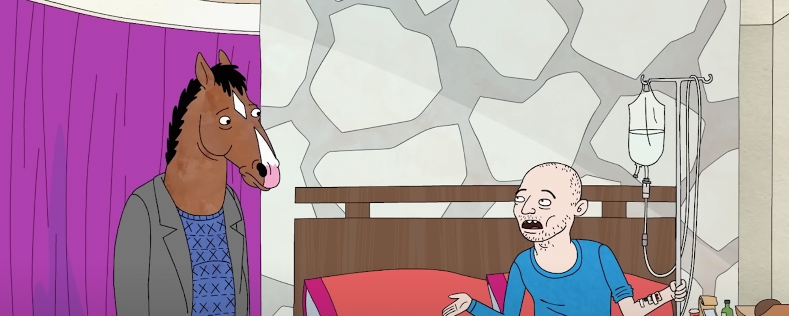

His father told him he's the reason his
career turned into a failure.
His mother forced Bojack to perform in
front of her friends and told him to
always give the people what they want.
His parents let him drink strong liquor
as a child.
His mother forced him to smoke without
coughing, because she didn’t want to be
the mother of a quitter. ‘I’m punishing
you for being alive’.
Teenager
Was called a coward by the girl he was
in love with.
Considered playing football but was told
he would embarrass himself.
Got drunk and made someone who was kind
to him run away and cry.
Horsin' Around
Gave his 10-year old co-star sarah-lynn
problematic advice that she would
internalize for years: “You don’t stop
dancing, and you don’t stop smiling, and
you give those people what they want.”
Broke his promise to his best friend
Herb to have his back in a public
scandal, later finds out this made him
almost end his own life.
Ignored red flags of Sarah-Lynn’s
‘weird’ step-dad and left her in the
dressing room with a water bottle filled
with vodka - which she drank.

Biography
Slept with Sarah-Lynn
Didn’t get forgiveness from Herb, even
when dying from cancer. Herb died
without Bojack getting closure.
Publicly asked his friend Diane if he is
too far gone from ever becoming a good
person. She didn’t answer.
Secretariat
Manipulated his girlfriend into telling
him she loves him by threatening to hurt
himself
Bought teenagers bourbon which made a
girl pass out, he made a teenage boy lie
about it at the hospital so he didn’t
have to face the consequences
Tried to kiss his old crush Charlotte,
and upon failure almost got into bed
with her teenage daughter instead
Got on a two week drug-bender with
Sarah-Lynn, which resulted into her
death. Waited 17 minutes to call the
ambulance and pretended he wasn’t with
her.
Philbert
His mother died, which means there was
no way of fixing their relationship
anymore.
Ruined a lizard funeral.
Guilt-tripped his half-sister into
getting drugs with him.
Took pain medication in extremely high
doses throughout the day, which made him
do awful things including strangling his
costar (and lover).